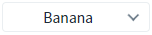
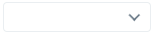
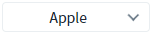
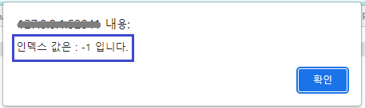
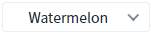
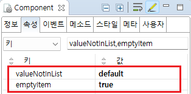
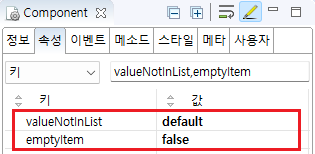
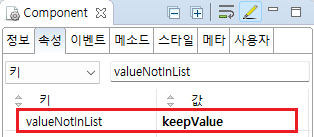

SelectBox의 'setValue' 메소드로 설정한 값이 항목에 없는 경우, 'valueNotInList' 속성과 'emptyItem' 속성을 사용하여 처리 방식을 설정한 예제입니다.
다음은 예제에서 사용한 속성과 설명입니다.
valueNotInList: (속성)설정된 DataList의 목록에 없는 값을 set하는 경우에 대한 처리방식 설정.
emptyItem: (속성)선택 항목에 없는 value나 index가 동적으로 설정하는 경우 빈 값으로 label과 value를 설정.
선택 항목 목록에 없는 값은 무시하기
목록의 첫번째 항목을 표시하기
선택 항목 목록에 없는 값을 유지하기
예제 영역 '선택 항목 목록에 없는 값은 무시하기'에서 테스트합니다.테스트를 위해 SelectBox에 두 번째 항목 'Banana'가 선택된 상태입니다.
Image 1.브라우저(Chrome) 실행 예시

1
STEP 1: 버튼 '선택 목록에 "Watermelon" 설정하기'을 클릭합니다.
2
STEP 2: 실행 결과를 확인합니다.
선택된 항목이 공백으로 표시됩니다.
Image 2.브라우저(Chrome) 실행 예시

예제 영역 '목록의 첫번째 항목을 표시하기'에서 테스트합니다.테스트를 위해 SelectBox에 두 번째 항목 'Banana'가 선택된 상태입니다.
Image 3.브라우저(Chrome) 실행 예시
1
STEP 1: 버튼 '선택 목록에 "Watermelon" 설정하기'을 클릭합니다.
2
STEP 2: 실행 결과를 확인합니다.
선택 목록의 첫 번째 항목 'Apple'이 선택되어 표시됩니다.
Image 4.브라우저(Chrome) 실행 예시

예제 영역 '선택 항목 목록에 없는 값을 유지하기'에서 테스트합니다.테스트를 위해 SelectBox에 두 번째 항목 'Banana'가 선택된 상태입니다.
Image 5.브라우저(Chrome) 실행 예시
1
STEP 1: 버튼 '선택 목록에 "Watermelon" 설정하기'을 클릭합니다.
2
STEP 2: 실행 결과를 확인합니다.
선택 목록에 'Watermelon'이 없지만, 해당 값이 유지하는 것을 확인합니다. 선택된 인덱스 값은 -1 입니다.
Image 6.브라우저(Chrome) 실행 예시 - 인덱스 반환 메시지

Image 7.브라우저(Chrome) 실행 예시

1
SelectBox의 속성을 설정합니다.
[필수] valueNotInList="default"
바인딩된 DataList의 목록에 없는 값을 set하는 경우(setValue API 또는 ref에 의해)에 대한 처리방식 설정. renderType="component"인 경우에만 지원한다.
renderType이 "native" 또는 "component"인 경우에는 속성 설정과 관계없이 "default"로 동작.
(옵션 설명) "default" (기본 값) : 해당 값을 무시한 다음, emptyItem 속성이 true이면 빈값을 보여주고 emptyItem 속성이 false이면 첫번째 항목 선택. "keepValue" : 해당 값을 유지. 목록에는 포함시키지 않으며 getValue()시 해당 값을 얻어온다. selectedIndex=-1 로 설정된다. 선택된 값이 변경되면 해당 값은 완전히 사라진다.
[필수] emptyItem="true"
[default:false, true] (setValue, setSelectedIndex 등을 사용하여) 선택 항목에 없는 value나 index가 동적으로 설정하는 경우 빈 값(empty string)으로 label과 value를 설정.
빈 값으로 value가 설정된 선택 항목이 추가되거나 삭제될 경우, 첫번째 항목이 선택됨. (HTML select의 selectedIndex=-1과 동일)
단, emptyValue 속성을 사용하여 빈 값이 아닌 다른 값을 value로 설정 가능.
Image 8.웹스퀘어 스튜디오의 Component View - 속성 설정 예시

Example 1.Source
<!-- selectBox의 소스 본문 예시 --> <xf:select1 valueNotInList="default" emptyItem="true" id="sbx_exam1"> <!-- 중략 --> </xf:select1>
1
SelectBox의 속성을 설정합니다.
[필수] valueNotInList="default"
바인딩된 DataList의 목록에 없는 값을 set하는 경우(setValue API 또는 ref에 의해)에 대한 처리방식 설정. renderType="component"인 경우에만 지원한다.
renderType이 "native" 또는 "component"인 경우에는 속성 설정과 관계없이 "default"로 동작.
(옵션 설명) "default" (기본 값) : 해당 값을 무시한 다음, emptyItem 속성이 true이면 빈값을 보여주고 emptyItem 속성이 false이면 첫번째 항목 선택. "keepValue" : 해당 값을 유지. 목록에는 포함시키지 않으며 getValue()시 해당 값을 얻어온다. selectedIndex=-1 로 설정된다. 선택된 값이 변경되면 해당 값은 완전히 사라진다.
[필수] emptyItem="false"
[default:false, true] (setValue, setSelectedIndex 등을 사용하여) 선택 항목에 없는 value나 index가 동적으로 설정하는 경우 빈 값(empty string)으로 label과 value를 설정.
빈 값으로 value가 설정된 선택 항목이 추가되거나 삭제될 경우, 첫번째 항목이 선택됨. (HTML select의 selectedIndex=-1과 동일)
단, emptyValue 속성을 사용하여 빈 값이 아닌 다른 값을 value로 설정 가능.
Image 9.웹스퀘어 스튜디오의 Component View - 속성 설정 예시

Example 2.Source
<!-- selectBox의 소스 본문 예시 --> <xf:select1 valueNotInList="default" emptyItem="false" id="sbx_exam2"> <!-- 중략 --> </xf:select1>
1
SelectBox의 속성을 설정합니다.
[필수] valueNotInList="keepValue"
바인딩된 DataList의 목록에 없는 값을 set하는 경우(setValue API 또는 ref에 의해)에 대한 처리방식 설정. renderType="component"인 경우에만 지원한다.
renderType이 "native" 또는 "component"인 경우에는 속성 설정과 관계없이 "default"로 동작.
(옵션 설명) "default" (기본 값) : 해당 값을 무시한 다음, emptyItem 속성이 true이면 빈값을 보여주고 emptyItem 속성이 false이면 첫번째 항목 선택. "keepValue" : 해당 값을 유지. 목록에는 포함시키지 않으며 getValue()시 해당 값을 얻어온다. selectedIndex=-1 로 설정된다. 선택된 값이 변경되면 해당 값은 완전히 사라진다.
Image 10.웹스퀘어 스튜디오의 Component View - 속성 설정 예시

Example 3.Source
<!-- selectBox의 소스 본문 예시 --> <xf:select1 valueNotInList="keepValue" id="sbx_exam3"> <!-- 중략 --> </xf:select1>
valueNotInList
emptyItem